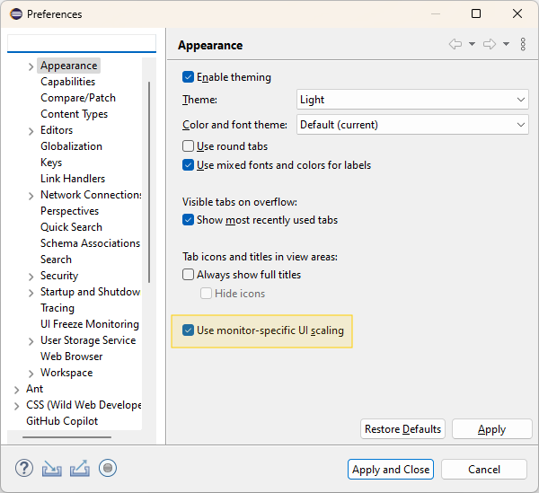
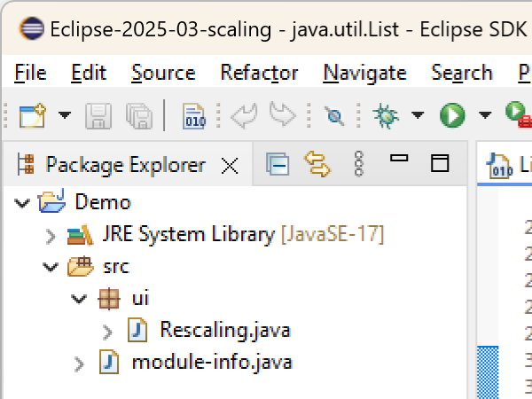
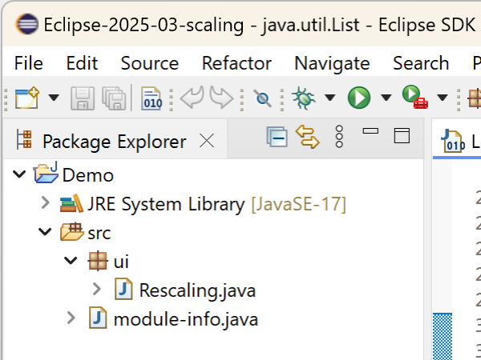

Views, Dialogs and Toolbar |
|
Text Editors |
|
Preferences |
|
Themes and Styling |
|
General Updates |
|
| Monitor-Specific UI Scaling as Default (Windows only) |
In the previous releases, a preference to enable an improved, monitor- and resolution-specific UI scaling on Windows was introduced (see the news for 4.34 and 4.35). The feature has been further improved since then and is now enabled by default. The feature makes each window adapt its scaling to the monitor it is currently placed on in a sharp, resolution-specific way and without requiring the application to restart. When using multiple windows, each of them will adapt its scaling to the monitor it is placed on. When enabled, this new feature replaces the current, limited scaling support for high-resolution monitors, which initializes the application's window according to the scaling of the primary monitor at application startup and produces blurry scaling when moving the window to another monitor unless you restart the application. To disable this feature, uncheck the Monitor-specific UI scaling box on the Appearance preference page (Window > Preferences > General > Appearance), as shown in the image below. The feature is still under further development. We encourage users to share their feedback to help us improve the functionality.  The images below demonstrate the scaling behavior in an extract of an Eclipse application when moving the window from a primary monitor with 100% scaling to another monitor with 200% scaling, first having the feature disabled and second having it enabled. On a 200% monitor with the feature being disabled:  On a 200% monitor with the feature being enabled:  |